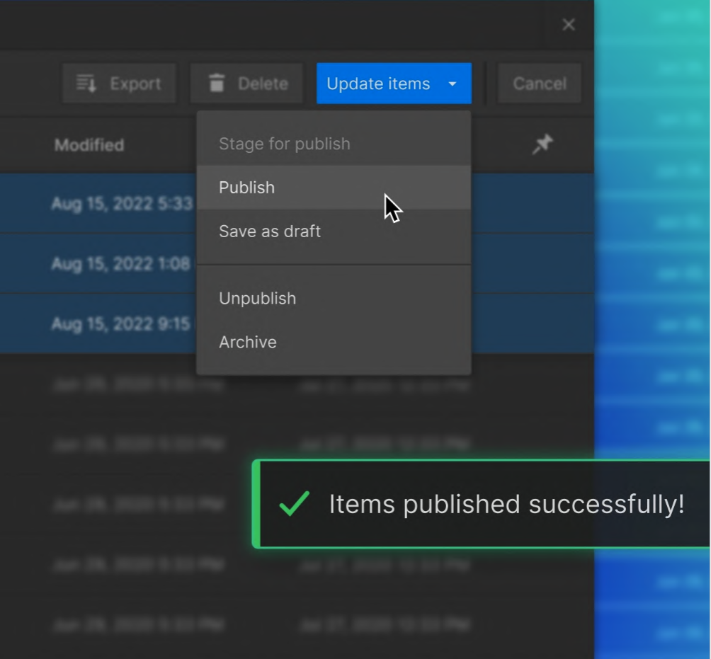

Gaining Responsive Design Skills and Finalizing Assignment 2.2
Week 10
This lecture explained the requirements for finishing Assignment 2.2 and our ongoing blogs.
Reviewing submission components clarified requirements - I'll include all files and a PDF report. Tips like double-checking accessibility will help make sure my work meets the assignment hand in requirements. The sample blog walkthroughs helped me understand best practices for simplicity, visual appeal, and responsiveness. Overall, this lecture provided all the information I needed for requirements and allotting work time as the submission date was close.
